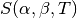
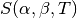

3. Cross Section Representation¶
The data governing the interaction of neutrons with various nuclei are represented using the ACE format which is used by MCNP and Serpent. ACE-format data can be generated with the NJOY nuclear data processing system which converts raw ENDF/B data into linearly-interpolable data as required by most Monte Carlo codes. The use of a standard cross section format allows for a direct comparison of OpenMC with other codes since the same cross section libraries can be used.
The ACE format contains continuous-energy cross sections for the following types
of reactions: elastic scattering, fission (or first-chance fission,
second-chance fission, etc.), inelastic scattering,  ,
,
 , and various other absorption reactions. For those reactions
with one or more neutrons in the exit channel, secondary angle and energy
distributions may be provided. In addition, fissionable nuclides have total,
prompt, and/or delayed
, and various other absorption reactions. For those reactions
with one or more neutrons in the exit channel, secondary angle and energy
distributions may be provided. In addition, fissionable nuclides have total,
prompt, and/or delayed  as a function of energy and neutron precursor
distributions. Many nuclides also have probability tables to be used for
accurate treatment of self-shielding in the unresolved resonance range. For
bound scatterers, separate tables with  scattering law
data can be used.
as a function of energy and neutron precursor
distributions. Many nuclides also have probability tables to be used for
accurate treatment of self-shielding in the unresolved resonance range. For
bound scatterers, separate tables with  scattering law
data can be used.
3.1. Energy Grid Methods¶
The method by which continuous energy cross sections for each nuclide in a problem are stored as a function of energy can have a substantial effect on the performance of a Monte Carlo simulation. Since the ACE format is based on linearly-interpolable cross sections, each nuclide has cross sections tabulated over a wide range of energies. Some nuclides may only have a few points tabulated (e.g. H-1) whereas other nuclides may have hundreds or thousands of points tabulated (e.g. U-238).
At each collision, it is necessary to sample the probability of having a
particular type of interaction whether it be elastic scattering,  ,
level inelastic scattering, etc. This requires looking up the microscopic cross
sections for these reactions for each nuclide within the target material. Since
each nuclide has a unique energy grid, it would be necessary to search for the
appropriate index for each nuclide at every collision. This can become a very
time-consuming process, especially if there are many nuclides in a problem as
there would be for burnup calculations. Thus, there is a strong motive to
implement a method of reducing the number of energy grid searches in order to
speed up the calculation.
,
level inelastic scattering, etc. This requires looking up the microscopic cross
sections for these reactions for each nuclide within the target material. Since
each nuclide has a unique energy grid, it would be necessary to search for the
appropriate index for each nuclide at every collision. This can become a very
time-consuming process, especially if there are many nuclides in a problem as
there would be for burnup calculations. Thus, there is a strong motive to
implement a method of reducing the number of energy grid searches in order to
speed up the calculation.
3.1.1. Logarithmic Mapping¶
To speed up energy grid searches, OpenMC uses logarithmic mapping technique [Brown] to limit the range of energies that must be searched for each nuclide. The entire energy range is divided up into equal-lethargy segments, and the bounding energies of each segment are mapped to bounding indices on each of the nuclide energy grids. By default, OpenMC uses 8000 equal-lethargy segments as recommended by Brown.